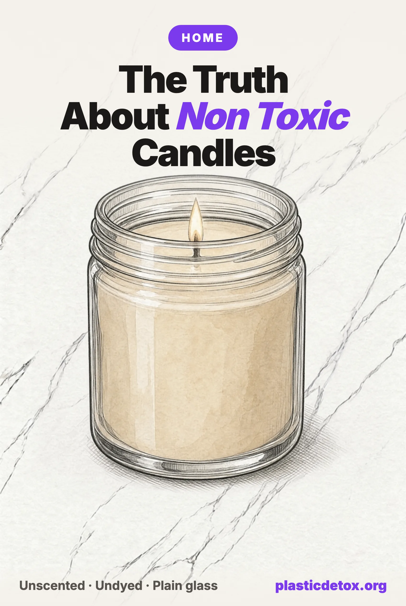

Non Toxic Candles: The Wax Is the Least Important Thing About One (2026)

The 30 Second Summary
- The wax type is the wrong question. Twenty four chamber runs burned palm, paraffin, soy and stearin under identical conditions and found no wax with a consistently better emission profile. The four unscented waxes grouped together. Fragrance is what separated the runs.
- Unscented is the measured answer, and beeswax is the shortest label. The Bee Hive Candles beeswax pillar is one ingredient and a cotton wick. The Bluecorn 3 by 4 pillar is the larger version and the Bluecorn raw beeswax tapers cover the dinner table.
- If you want scent, make the label name the oils. "Fragrance" and "parfum" name nothing and are where phthalates live, and even "essential oil blend" is still an umbrella. Fontana's Cinnamon Orange Clove lists every oil and how it was extracted, on a beeswax and coconut oil base with a wooden wick, and the range is MADE SAFE certified.
- Pearled candles change three real things. With Foton's unscented pearls you choose how many wicks burn, the molten wax stays local to each one instead of pooling across the surface, and you supply the vessel, so no printed jar is involved.
- Two things the public record settles for you. Lead cored wicks have been illegal since October 2003, so a lead free claim restates the law. And every candle recall since 2020 was a fire, burn or laceration hazard, fifteen of them the glass jar cracking mid burn, none about what is in the wax.
- Ventilation and burn length beat every purchase decision. The compounds that came closest to exceeding an indoor guide value are ordinary combustion products, and they accumulate with time in a room where air does not move.
Almost every guide to candles opens with the same sentence. Paraffin is petroleum, so burn soy instead. It is the most repeated claim in the category, it is on the packaging of half the shelf, and there is no controlled study behind it. The one experiment actually designed to settle the question burned four different waxes under identical laboratory conditions and found that the wax barely moved the numbers. What moved them was whether the candle carried fragrance, and which fragrance it was.
So this guide is organised around what the measurements separate rather than around what the labels claim. It covers what comes off a burning candle, six claims that fall apart when you read the primary source, what the recall record says candles genuinely injure people with, and how pearled candles, the loose wax beads you pour into a vessel you already own, differ from a jar candle in ways that are structural rather than marketing. And because most people are buying a candle for the smell rather than the light, there is a section on the one line of the label that tells you whether a scented one is worth having.
1. What Actually Comes Off a Burning Candle
A candle is a small controlled fire in a room with the windows shut. Burning any wax produces carbon monoxide, carbon dioxide, nitrogen oxides, fine and ultrafine particles and a spread of volatile organic compounds. That is true of beeswax, coconut wax, soy, palm, stearin and paraffin alike, because all of them are hydrocarbons and a flame does not care which crop the hydrocarbon came from. The useful question was never whether a candle emits. It is which of the choices available to you in a shop actually changes the number.
The study that answers it is Salthammer and colleagues, Environment International 155, published open access in 2021. They built candles to known formulations rather than buying them off a shelf, which nobody had done before, and burned them in an 8 cubic metre stainless steel chamber. Four waxes, palm, paraffin, soy and stearin. Five fragrance families, each blended in at 5 percent by weight. Plus unscented controls of all four waxes. Twenty four runs, monitoring formaldehyde, acetaldehyde, benzene, toluene, polycyclic aromatic hydrocarbons, PM2.5, ultrafine particles and the combustion gases.
Their conclusion on the wax question is a single sentence: "No individual wax was shown to have a consistently better emission profile than the others." In the statistical clustering, the four unscented waxes fell into one group together. What split the other twenty runs apart was fragrance. Eight high emission combinations formed their own cluster and seven of those carried either the fruit or the fresh fragrance. The floral, oriental and spice blends landed closer to the plain unscented candles than to the high emission group.
The same paper modelled what those emission rates mean in a home: a 30 cubic metre room at half an air change an hour, with the candle burning four hours a day, four days a week. Against that scenario most measured compounds came out comfortably below their indoor guide values. Three did not always. Acrolein exceeded the US EPA reference concentration in eight of the twenty four runs. Benzo[a]pyrene exceeded the World Health Organization value in part of the five runs where it was detected at all. Nitrogen dioxide passed a WHO short term value twice.
Read those three carefully, because they are the opposite of a shopping argument. Acrolein, benzo[a]pyrene and nitrogen dioxide are ordinary products of incomplete combustion. Nothing on a label produces them and no wax avoids them. They scale with how long the flame burns and how little the air moves, which is why the newest paper in this area, a 2026 study in Toxics, reached the same practical conclusion from a completely different angle: the lever is ventilation. The authors of the 2021 work also note that both acrolein and benzo[a]pyrene were measured close to the limit of quantification, so the numbers carry real uncertainty.
2. Six Claims That Do Not Survive Checking
Each of these is repeated confidently across the category, including by people selling the thing they recommend instead. We went to the primary source on all six. Two of them we had asserted ourselves before checking, and this article is where we correct that.
"Paraffin is petroleum, so it poisons your air. Soy is the clean choice."
No sound comparison supports this. The study most often cited for it was funded by a soy trade body, and a web search on the question returns almost nothing but candle sellers with a commercial interest in the answer. The controlled chamber work above burned paraffin and soy side by side under identical conditions and grouped them together. Fragrance drives emissions far harder than fuel does, which means a scented soy candle and a plain paraffin one are not the comparison people think they are running.
Verdict: not supported by any controlled measurement
"Candle wicks contain lead, and one candle can put over a thousand micrograms an hour into the air."
Those figures are real and they are twenty years out of date. The Consumer Product Safety Commission banned lead cored wicks in October 2003 at 0.06 percent lead by weight, under 16 CFR 1500.17, and its own testing at that limit found no detectable airborne lead. The alarming microgram numbers still in circulation were measured on candles made before the ban. Zinc cores remain legal and sit under the limit, so cotton is not demonstrably safer on lead. A lead free wick claim on a package restates the law.
Verdict: true before October 2003, obsolete since
"Organic or all natural wax burns cleaner."
Organic describes how a crop was grown. It says nothing about what a molecule does at six hundred degrees inside a flame, and nobody has measured a difference between organic and conventional wax of the same type. This is reasoning from a mechanism that sounds right rather than from a test, and it is the same shape as assuming an organic label means a food carries no heavy metals, which is a separate claim needing separate evidence. Natural is not a regulated word on a candle at all.
Verdict: describes the farm, not the flame
"Wax melts and warmers are the safe version, because there is no flame."
The measurement runs the other way. In February 2025, Patra and colleagues published field work in Environmental Science and Technology Letters running scented wax melts in a residential test house. Indoor nanoparticle concentrations exceeded ten to the sixth per cubic centimetre, comparable to scented candles, gas stoves and diesel engines, with respiratory deposited dose rates to match. The mechanism is terpenes from the melt reacting with indoor ozone. A warmer heats a wide shallow surface and carries a higher fragrance load, so removing the flame removes the soot, not the chemistry.
Verdict: reversed by the measurement
"Beeswax candles release negative ions that clean the air."
This appears on hundreds of pages and not one of them cites a study, because there is no study to cite. Combustion is a free radical process and radicals are electrically neutral, so a flame is not an ion generator. Beeswax is a hydrocarbon with an ester group and it burns to carbon dioxide and water like any other fuel, releasing particulates and nitrogen oxides on the way. We recommend unscented beeswax candles below, and this is not the reason. A beeswax candle is an air pollution source, a small one, like every candle.
Verdict: no evidence, and the chemistry argues against it
"Essential oils are the safe way to scent a room."
Essential oils are a genuine improvement on one specific axis: they are named botanical extracts rather than an undisclosed mixture, so you can check what is in the room. They are not inert. They are volatile organic compounds, heavy in terpenes, and terpenes are exactly the molecules driving the particle formation in the wax melt work. The honest position is that a named essential oil beats an undisclosed fragrance on disclosure while sitting in the same emission category, and that "blend of essential oils" with nothing named gives you neither.
Verdict: better disclosure, same category of emission
Every brand named in this article, picks and cautions alike, has an entry in our Product Check tool with the materials we recorded, the legal record we searched and the reason behind the verdict. Type a candle brand in there for the short version.
3. What Genuinely Separates One Candle From Another
Strip away the six claims above and three things are left that actually differ between two candles on the same shelf, and all three are checkable before you buy.
First, whether the scent is disclosed. The word fragrance on a label is a legal umbrella that can stand for hundreds of ingredients, and historically it carried phthalates. A peer reviewed screening of forty seven branded perfumes found diethyl phthalate in every single one, and diethyl phthalate is the solvent and fixative the trade uses specifically to push scent out of soy wax. That study measured perfumes rather than candles, so it is a reading of the category rather than proof about any one jar, and we treat it at that strength. What it justifies is a preference, not a conviction.
Our own rule follows from the disclosure rather than from the chemistry. A scent we cannot read is capped at use carefully, because the absence of the information is a choice the maker made, and a product at use carefully does not get promoted here. Where a brand sells an unscented version of the same candle, that version is the pick. That rule and the chamber data happen to point at the same product from two completely different directions, which is the most persuasive thing about it.
Second, the legal record. Recalls, class actions and product liability suits attach to a specific brand and a specific line, and they are public. We search them on every product before rating it, and in this category they are unusually informative, for reasons the next section covers.
Third, independent testing of that specific product. There is very little of it. Watchdog labs have not published emission testing on named consumer candle brands, and a brand commissioned certificate of analysis is the weakest tier of evidence we accept. An absent test is a gap, not a finding, so it does not count against a candle. It also means no candle on the market has earned a verdict on the strength of a lab result, and you should be suspicious of any page implying otherwise.
4. Pearled Candles and Traditional Candles, Side by Side
A pearled candle is not a new wax. It is a new format. Instead of buying wax already poured into a jar with the wicks set in place, you buy loose beads of wax and a bag of wicks, pour the beads into a vessel you already own, and push a wick into the bed. Foton is the brand that made the format, working in coconut wax with cotton wicks. When the wick is spent you pull it out, push in another, and the beads carry on. Most of what is written about the format is either wonder or dismissal, so here is what actually differs.
The wick count becomes your decision. A three wick jar is sold as one setting: three flames, every time, or an uneven burn. Loose beads let you light one wick on a Tuesday and three on a Saturday. This matters more than it sounds, because emission scales with the number of flames and the size of the burn, and it is the only place in the whole category where the buyer gets a dimmer switch instead of a fixed product.
The molten wax stays local. In a jar candle, a correct burn is one where the liquid pool reaches the full width of the glass, and the industry insists on that because anything less tunnels the wax. In a pearled candle the opposite is true: the maker's own guidance asks for at least two inches of beads around each wick and a vessel at least four inches wide at its narrowest, precisely so the pool never reaches the edge. The surrounding beads stay solid.
That distinction is not cosmetic, and the wax melt study is the reason to take it seriously. Melts produced nanoparticle concentrations on a par with candles specifically because a warmer maximises the heated liquid surface. Evaporation off the pool is one of the two routes by which a scented candle emits, the other being combustion at the flame. A format that keeps the pool small is working on the right variable. We want to be exact about the strength of that, though: nobody has run a pearled candle in an emission chamber. It is a mechanism with adjacent support, not a measurement, and on this site a test beats a mechanism every time.
Nothing tunnels, so a short burn is free. The standing advice for a jar candle is that the first burn must run long enough to melt the surface edge to edge, or the candle keeps a memory of the smaller pool and tunnels forever. That single piece of advice pushes people into three and four hour burns they did not want, which is the exact variable the exposure modelling says to reduce. With loose beads there is no memory, so twenty minutes costs you nothing.
You supply the vessel. This is the quietest difference and, on the recall record, the most consequential one. A jar candle comes with the maker's glass, often printed or painted on the outside. Beads come with nothing, so the container is whatever plain glass or ceramic you already own. The next two sections explain why that matters.
Two honest limits on all of this. The format's absence from the recall database is not a clean bill of health: it is newer and sells in far smaller volume, and absence of evidence is not evidence of absence. And the format moves one risk onto you rather than removing it. Foton's own guidance warns that a vessel narrower than four inches lets the melt pool reach the glass and overheat it, which is a fire hazard. A jar candle has that decision made for it at the factory. With beads it is yours, and you have to actually read the instruction.
| Traditional jar candle | Pearled candle | |
|---|---|---|
| What you buy | Wax already poured into the maker's vessel, wicks set | Loose wax beads and a bag of wicks, no vessel |
| Number of flames | Fixed at one, two, three or six by the maker | Your choice, changeable every time you light it |
| Molten surface | Full width of the glass, and a correct burn requires it | Local to each lit wick, kept clear of the wall by design |
| Short burns | Penalised: too short and the candle tunnels for good | No penalty, because loose beads keep no memory |
| The vessel | The maker's, frequently printed or painted outside | Plain glass or ceramic you already own |
| Who makes the fire safety call | The factory, through wick sizing and glass testing | You, through vessel width, per the maker's minimum |
| Emission testing of the format | Chamber studies exist, though not on named retail brands | None published. A gap, and we are not filling it with a guess |
| When it is spent | A glass jar to scrape out, reuse or discard | New wick into the same beads, same vessel |
5. What Candles Actually Get Recalled For
We pulled every candle recall in the Consumer Product Safety Commission database from 2020 onward and read each hazard description rather than the headline. There are twenty. Fifteen of them describe the glass container cracking, breaking or shattering while the candle burns. Eleven describe flames reaching excessive heights or spreading across the surface of the wax. Nine name a three wick, double wick or six wick candle in the title. Two of those recalls covered more than a million units each, and one covered close to five million.
Not one of the twenty concerns what is in the wax, the wick or the fragrance. The entire recorded injury history of this category in six years is fire, burns and cuts from broken glass, and the two design features that keep appearing are a glass vessel and a high wick count. That is a strange thing to discover when every article about candles, including several we could name, is about the wax.
There is one live chemical thread, and it is not in the wax either. A California Proposition 65 notice served on 2 April 2026, number 2026 01481, alleges lead in "Candles With Exterior Designs" against two companies. Proposition 65 lead notices have named decorated candles and decorative metal aromatics before. A sixty day notice is an allegation, not a finding, so it is not a verdict against any product we rate. What it is is a pointer at the painted outside of the vessel, which is the same place lead keeps turning up in other categories we cover.
6. The Cup, the Jar and the Painted Design
The container is the part of a candle nobody reads about, and it is where the two real material questions in this category live.
The first is tea lights. A tea light traditionally sits in a thin aluminium cup, but a large share of them now sit in a clear cup instead, because clear cups let more light out of a holder. Those clear cups are polycarbonate, which the candle supply trade states openly and sells by the bag. Polycarbonate is on our hazard list for bisphenol A, and heat is the single variable that moves migration hardest, so a polymer chosen for its heat resistance and then placed directly under a flame for five hours is the pairing our materials standard scores worst.
We will be straight about the evidence here, because it is thinner than we would like. Nobody has measured what a heated polycarbonate tea light cup releases, into the wax or into the room. That is a gap, not a finding, and we are not going to write it as one. What we will say is that aluminium cups do the identical job, cost the same, are the older standard, and remove the question entirely. If a tea light comes in a clear cup, put it back, and that goes for the clear cup tea lights sold by brands we otherwise recommend.
The second is the outside of the jar. Printed and painted candle vessels are exactly what the Proposition 65 notice above points at, and this site has repeatedly found lead in decoration rather than in the substrate: in the printed markings on glass baby bottles, in the transfers on ceramics. A candle jar does not go near your mouth, so this is a lower stakes version of that problem, and it is genuinely unassessed rather than proven. Still, a plain undecorated vessel costs nothing extra and closes the question. It is also, not coincidentally, what a pearled candle forces you to use.
7. If You Want Scent, This Is the Label Test
Most people buy a candle for the smell. Telling them to buy unscented is the honest answer to what the measurements show and a useless answer to what they actually want, so here is the version for anyone who wants the room to smell of something. There is one line on the label that decides it, and it is not the word natural.
A candle scented with fragrance or parfum tells you nothing. That word is a legal umbrella standing in for a mixture that can run to hundreds of ingredients, it is where diethyl phthalate lives in this trade, and the maker chose to use it rather than list what is in the jar. Essential oils are the better answer, and the word alone is still not enough, because "a blend of essential oils, absolutes and plant derived isolates" is a real phrase off a real beeswax candle and it names nothing either. What you want is the oils themselves named.
Scent names are a quick proxy for the same thing. "Lavender" and "Cinnamon Orange Clove" are ingredient lists wearing a label. "Serenity", "Relaxing" and "Cozy Cabin" are moods, and a mood can be made of anything. The brand worth finding is the one that names a scent for a mood and then publishes the oils underneath it anyway, which is a decision about transparency rather than about marketing, and it is rarer than it should be.
Be clear about what naming the oils buys you and what it does not. It removes the phthalate question, because a named steam distilled oil needs no solvent carrier, and it gives you a formula you can read. It does not make the candle stop emitting. Essential oils are volatile organic compounds, heavy in terpenes, and terpenes are the molecules driving the particle formation in the wax melt work above. A scented candle of any kind is the one you burn for an hour with a window cracked, not the one you leave going all evening in a shut bedroom.
One brand clears this bar properly. Fontana publishes a full ingredient list on every scent it sells, naming each oil and how it was extracted, right down to "Sweet Orange Oil steam distilled (Citrus Sinensis)", and it does that on the mood named scents as well as the literal ones. The whole candle is beeswax, coconut oil, named oils and an untreated cherry wood wick, and the range carries MADE SAFE certification, which screens ingredients against a banned list that includes phthalates. Among its scents the Cinnamon Orange Clove has the review record to stand behind, at 4.3 stars across 119 ratings, where the rest of the range is still too thin for us to put forward.

8. The Candles We Recommend
These are the unscented picks, the ones for light rather than smell. The scented pick is in the section above, and everything here clears the same screens: a named wax, a cotton or wood wick, no dye and a vessel with nothing printed on it. Unscented is the only option the chamber work actually measured as lower. Among the candles that pass, owner reviews decided the order, and a thin or weak review record kept several otherwise sound brands out.
Beeswax is the pick for the traditional formats, and not for the reasons usually given for it. It does not purify anything. What it does is make the label one line long: wax and a cotton wick, nothing to conceal, no fragrance umbrella and no dye.
That last word is worth a sentence, because it is the one axis in this category almost nobody checks. Coloured candles are coloured with something, and the something is usually a trade named dye whose composition the maker does not publish. It is a far smaller question than fragrance, since dye is a fraction of a percent by weight and nothing adverse has been found in one, but the principle is the same: an unpublished additive cannot be checked. Every pick below is the natural or naturally filtered version of its range rather than the coloured one, which is why the tapers here are raw gold rather than ivory.

Bee Hive Candles 100% Beeswax Pillar
Pure US beeswax with a 100% cotton wick, unscented and undyed. No vessel, no printed glass, no fragrance umbrella. Hand poured in Utah. 4.6 stars across 563 ratings.
View →
Bluecorn Beeswax Tapers, Raw
Pure US beeswax dinner candles, naturally filtered rather than dyed, cotton wick, unscented and undyed, 8 inches, sold two to a pack. Fits a standard holder. 4.8 stars across 1,582 ratings.
View →
Bluecorn Beeswax 3 by 4 Pillar
Pure US beeswax, cotton wick, no fragrance or dye, in raw or filtered finish. The wider pillar for longer sessions. Poured in Colorado. 4.4 stars across 587 ratings.
View →For the pearled format the pick is the plain one, for the same reason. Foton's scented pearls describe their fragrance as a blend of natural and synthetic oils free of phthalates and parabens, which is a better claim than most of the shelf can make and still not an ingredient list, so it sits at use carefully with us and we do not promote it. The scent free version removes the question. Coconut wax, cotton wicks, no dye, and the vessel is yours.

9. Brands We Did Not Pick
Two brands people ask us about by name, and one whole format. In each case the reason is recorded rather than inferred.
Bath & Body Works Three Wick Candles
Two product liability actions are live over three wick candles reportedly flaring or exploding, one over a Sweater Weather candle alleging severe burns and permanent disfigurement, one over a Eucalyptus Spearmint candle alleging permanent scarring. Both allege the company knew and neither a recall nor a redesign followed. That is an allegation and not a court finding, and we are recording it as one. The published ingredient list for Mahogany Teakwood Intense is unusually full for the category, running through hydrogenated soybean oil, paraffin, microcrystalline wax, butyl stearate, BHT and six declared allergens, but the scent itself is still fragrance, which we cap at use carefully. The three wick format is also the exact design the recall record keeps returning to.
Capri Blue Glass Jar Candles
Mostly soy wax with a small paraffin fraction, a braided cotton wick and a glass jar with a metal lid. We searched recalls, lawsuits, CPSC actions and regulatory warning letters and found nothing at all, which is worth stating plainly because it is a clean legal record. The verdict rests on one thing: the fragrance is a proprietary oil and the composition is not published anywhere, so it stays at use carefully under our disclosure rule and does not get promoted. Nothing here is a finding of harm. It is the absence of information the maker controls.
Claricomb Beeswax Candles
American beeswax, coconut oil and a lead free cotton wick, with no dye or colorant, which is a good base. The scent is described as plant based oils, "a blend of essential oils, absolutes and plant derived isolates". That is three umbrellas in one line: it does not say which oils, how many, or what an isolate is in this case, so it caps at use carefully under our disclosure rule the same way the word fragrance does. We searched recalls, lawsuits, CPSC actions and Proposition 65 notices and found nothing, so the legal record is clean. This is the clearest illustration in the category that the phrase essential oils is a starting point rather than the test.
Scented Wax Melts and Electric Warmers, as a Format
This one is not about a brand. The 2025 field study in Environmental Science and Technology Letters recorded indoor nanoparticle concentrations above ten to the sixth per cubic centimetre from scented wax melts in a test house, comparable to scented candles, gas stoves and diesel engines, with matching respiratory deposited dose rates. The driver is terpene and ozone chemistry, and the format aggravates it by heating a wide shallow surface with a high fragrance load. If you switched to melts to get away from candle smoke, the switch did not do what it was sold as doing.
10. How to Burn One
This section is worth more than the shopping section, and it costs nothing. Everything the chamber modelling flagged scales with time and with how little the air moves, so the two levers are duration and ventilation. Burn for an hour rather than an evening. Open a window, or at least leave the door open, because the model that produced those exceedances assumed half an air change an hour, which is a sealed modern room. Ultrafine particle counts spike in the first thirty to sixty minutes after lighting, so lighting a candle in a small closed room and leaving it is the worst version of the habit.
Trim the wick to about a quarter of an inch before every light. A long wick is what makes soot, and soot on the inside of a jar is a sign of an untrimmed wick or a draught, not of a toxic wax. Keep the flame out of moving air for the same reason. Light one wick rather than three when one will do, which the recall record makes a fire safety point as well as an emission one. Snuff the flame rather than blowing it out, since blowing lofts the smoke and the unburned wax straight into the room. And do not burn anything scented in a bedroom you are about to sleep in with the door shut.
11. The Whole Category, Scored
| What people compare | What the evidence says | Our verdict |
|---|---|---|
| Soy against paraffin | Four waxes, identical conditions, no consistent winner | Not a real distinction |
| Scented against unscented | Scented emits measurably more VOCs, fragrance family matters | The one difference that is measured |
| Disclosed against "fragrance" | The umbrella can hide hundreds of ingredients; DEP was in 47 of 47 perfumes screened | Disclosure decides the verdict |
| Named oils against "essential oil blend" | Both avoid a fragrance umbrella; only one of them tells you what is in the room | If you want scent, buy the one that names them |
| Cotton wick against metal core | Lead cores banned in 2003; no detectable airborne lead at the limit | Settled by law, not a buying criterion |
| Organic wax against conventional | No measured difference in what burning wax emits | Describes the farm, not the flame |
| Wax melts against candles | Melts reached nanoparticle levels comparable to candles and gas stoves | Not the safer option it is sold as |
| Aluminium tea light cup against clear | Clear cups are polycarbonate, sitting under a flame for hours | Choose aluminium, the question disappears |
| Plain vessel against printed or painted | An open Prop 65 lead notice names candles with exterior designs | Plain glass, on the same logic as our bottle picks |
| Three wicks against one | Nine of twenty recalls since 2020 name a multi wick candle | Fewer flames, on fire safety and emission both |
| Four hour burn against one hour | The exceedances in the modelling scale with time and low ventilation | The single most effective change, and it is free |
If you are buying in order, it goes: unscented first, then a plain vessel or none at all, then fewer wicks, then whichever wax you like the look and smell of, because that last one is genuinely a preference. Our indoor air guide puts candles in proportion against the rest of what is in a room, the myths piece collects the other claims in this shape, and Product Check holds the record behind every verdict here.
12. Frequently Asked Questions
Are soy candles safer than paraffin candles?
Not on the evidence. The only study built to answer the question burned palm, paraffin, soy and stearin under identical conditions in an 8 cubic metre chamber, twenty four runs in all, and concluded that no individual wax had a consistently better emission profile than the others. All four unscented waxes grouped together in the statistical analysis. What separated the runs was fragrance, not fuel. The study is Salthammer and colleagues, Environment International 155, 2021, and it is open access. Anyone telling you soy burns cleaner than paraffin is reasoning from where the raw material came from rather than from a measurement.
Do candle wicks still contain lead?
No, not legally, and not since October 2003. The Consumer Product Safety Commission banned lead cored wicks at 0.06 percent lead by weight under 16 CFR 1500.17, and CPSC testing at that limit found no detectable airborne lead. The frightening figures still circulating, in the range of hundreds to well over a thousand micrograms an hour, were measured on candles made before the ban. Zinc cored wicks are legal and sit under the limit. A lead free wick claim on a package is therefore a description of the law, not a feature worth paying for.
What is a pearled candle and is it better than a normal candle?
A pearled candle is loose wax beads that you pour into a vessel you already own, then push a wick into. Three things genuinely change. You choose how many wicks burn, so a jar sold with three flames becomes one flame if you want. The molten wax stays local to each wick instead of forming a pool across the whole surface. And nothing tunnels, so a twenty minute burn costs you nothing, where a jar candle pressures you into long first burns. Nobody has measured a pearled candle's emissions in a chamber, so that is a mechanism rather than a test result, and we are labelling it as one.
What do candles actually get recalled for?
Fire, burns and cuts. We pulled every candle recall in the Consumer Product Safety Commission database since 2020, twenty of them, and read each hazard description. Fifteen involve the glass container cracking, breaking or shattering while the candle burns. Eleven describe flames reaching excessive heights or spreading across the wax surface. Nine name a three wick, double wick or six wick candle in the title. Not one recall in that period concerns what is in the wax, the wick or the fragrance. The recorded injury risk in this category is the vessel and the wick count, not the ingredients.
Is a scented candle bad for you?
Scented candles measurably emit more volatile organic compounds than unscented ones, and that is the single largest difference the chamber work found. It is not because scent is poison. It is that fragrance molecules have more complicated combustion chemistry than wax does, and that many of them evaporate straight off the molten pool. There is a second issue, which is disclosure: the word fragrance on a label is a legal umbrella that can hide hundreds of ingredients, and a screening of forty seven branded perfumes found diethyl phthalate in every one. If you want scent, the version you can check beats the version you cannot.
Are essential oil candles better than fragrance candles?
Better, and the words essential oil are not by themselves the test. A label that says fragrance or parfum is a legal umbrella that can stand for hundreds of ingredients, and it is where diethyl phthalate lives in this trade, so avoiding it is a real improvement. But “a blend of essential oils, absolutes and plant derived isolates” is a real phrase off a real beeswax candle, and it names nothing either. What you want is every oil named, ideally with its botanical name, which is what Fontana publishes on all of its scents including the mood named ones. Essential oils are still volatile organic compounds and still emit, so a scented candle of any kind is the one you burn for an hour with a window cracked.
Are wax melts and flameless warmers safer than candles?
No, and the measurement runs the other way. A 2025 study in Environmental Science and Technology Letters ran scented wax melts in a residential test house and recorded indoor nanoparticle concentrations above ten to the sixth per cubic centimetre, comparable to scented candles, gas stoves and diesel engines. The mechanism is terpenes from the melt reacting with indoor ozone to form new particles, and the format makes it worse rather than better: a warmer heats a wide, shallow surface and carries a higher fragrance load than a candle does. Removing the flame removes the soot, not the chemistry.
Do beeswax candles purify the air?
No. The claim is that beeswax releases negative ions which pull dust and allergens out of the air, and it appears on hundreds of pages without a single one citing a study, because there is not one to cite. Combustion is a free radical process and radicals are electrically neutral. Beeswax is a hydrocarbon with an ester group and it burns to carbon dioxide and water like any other fuel, releasing particulates and nitrogen oxides on the way. We recommend unscented beeswax candles, but for a different reason: the label names one ingredient and a cotton wick, and there is nothing left to hide.
How should you burn a candle to keep the air clean?
Ventilation and duration are the levers, and both are free. The exposure model behind the chamber study assumed a thirty cubic metre room at half an air change an hour with the candle burning four hours a day, and the compounds that came closest to exceeding a guide value were ordinary combustion products that scale with time and accumulate when air does not move. So crack a window, burn for an hour rather than an evening, keep the flame away from a draught, and trim the wick to about a quarter of an inch before each light, because a long wick is what produces soot.
Related Articles
- Microplastics in Your Indoor Air
What else is in the room, and how a few hours of candle compares to it. - Myths Debunked
More claims that fall apart the moment you read the primary source. - Clean Products That Aren't
Other categories where the marketing language outruns what is in the package. - How to Avoid BPA and Phthalates
The two chemical families behind the fragrance and polycarbonate cautions here. - Microplastics in Your Bedroom Air
The room where burning anything scented matters most, and what else is in it. - Cleaning Products and Microplastics
The same fragrance disclosure problem, on the other side of the cupboard.